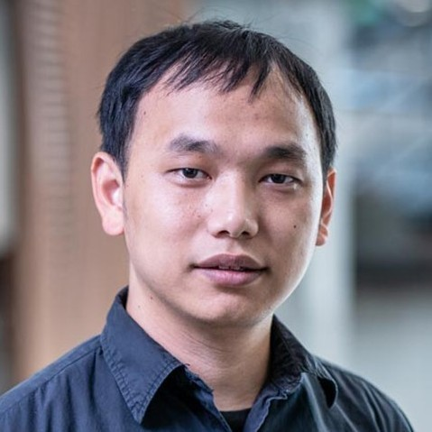

ICCV 2019 Tutorial on Accelerating Computer Vision with Mixed Precision Time and Location: Saturday, Nov 2, Half Day AM Room E5
New levels of accuracy in computer vision, from image recognition and detection, to generating images with GANs, have been achieved by increasing the size of trained models. Fast turn-around times while iterating on the design of such models would greatly improve the rate of progress in this new era of computer vision.
This tutorial will describe techniques that utilize half-precision floating point representations to allow deep learning practitioners to accelerate the training of large deep networks while also reducing memory requirements.
The talks and sessions below will provide a deep-dive into available software packages that enable easy conversion of models to mixed precision training, practical application examples and tricks of the trade (mixed precision arithmetic, loss scaling, etc.), as well as considerations relevant to training many popular models in commonly used deep learning frameworks including PyTorch and TensorFlow.
| Time | Title | Speaker | Affil. |
| 08:45 - 08:50 | Welcome | Arun Mallya | NVIDIA |
| 08:50 - 09:30 | Introduction to Mixed Precision Training with PyTorch and TensorFlow | Dusan Stosic | NVIDIA |
| 09:30 - 10:00 | Mixed Precision Training and Inference at Scale at Alibaba | Jun Yang | Alibaba |
| 10:00 - 11:00 | Coffee Break | ||
| Accelerating Various Tasks with Mixed Precision | |||
| 11:00 - 11:20 | Network Pruning | Pavlo Molchanov | NVIDIA |
| 11:20 - 11:35 | Semantic Segmentation | Karan Sapra | NVIDIA |
| 11:35 - 11:50 | Image Processing | Guilin Liu | NVIDIA |
| 11:50 - 12:10 | Image Synthesis | Ting-Chun Wang | NVIDIA |
| 12:10 - 12:30 | Generative Adversarial Networks (GANs) | Ming-Yu Liu | NVIDIA |
Below are code repositories which have used AMP to train their models. Please refer to their respective READMEs to activate AMP. These repos can serve as a guide for using AMP in your project.
| ImageNet Classification | https://github.com/NVIDIA/apex/tree/master/examples/imagenet |
| Semantic Segmentation | https://github.com/NVIDIA/semantic-segmentation |
| Mask R-CNN | https://github.com/NVIDIA/DeepLearningExamples/tree/master/PyTorch/Segmentation/MaskRCNN |
| SSD Detection | https://github.com/NVIDIA/DeepLearningExamples/tree/master/PyTorch/Detection/SSD |
| Vid2Vid | https://github.com/NVIDIA/vid2vid |
| Pix2PixHD | https://github.com/NVIDIA/pix2pixHD |
| Image Inpainting | https://github.com/NVIDIA/partialconv#mixed-precision-training-with-amp-for-image-inpainting |
| Language Modeling | https://github.com/NVIDIA/DeepLearningExamples/tree/master/PyTorch/LanguageModeling/ |
| All TensorFlow links | https://github.com/NVIDIA/DeepLearningExamples/tree/master/TensorFlow |
| All PyTorch links | https://github.com/NVIDIA/DeepLearningExamples/tree/master/PyTorch |
| Arun Mallya is a Research Scientist at NVIDIA Research. He obtained his Ph.D. from the University of Illinois at Urbana-Champaign in 2018, with a focus on performing multiple tasks efficiently with a single deep network. He holds a B.Tech. in Computer Science and Engineering from the Indian Institute of Technology - Kharagpur (2012), an MS in Computer Science from the University of Illinois at Urbana-Champaign (2014). His current interests are on making neural networks faster, better, and more compact. | |
| Paulius Micikevicius works in compute architecture at NVIDIA on accelerating DNN training and inference through reduced arithmetic and other optimization techniques. In his previous roles at NVIDIA Paulius focused on parallelizing various compute workloads for GPUs, including DL, computer vision, scientific, and engineering applications. He also worked worked on developer education, connecting chip architecture details to software optimization techniques, resulting some of the highest rated and attended GPU Technology Conference talks. Paulius has also worked on perception while at a self-driving car company Zoox and as an assistant professor of Computer Science at Armstrong Atlantic State University. He holds a PhD in Computer Science from the University of Central Florida. | |
| Carl Case is a senior architect in compute architecture at NVIDIA, where he works on reduced-precision arithmetic for training deep neural networks. His focus is optimizing the entire stack of deep learning training - from hardware to high-level software - to accelerate the pace of AI development. Previously, he worked as a machine learning researcher on Deep Speech and its successor speech recognition systems at Baidu's Silicon Valley AI Lab. He holds bachelor's and master's degrees in computer science from Stanford University. | |
| Pavlo Molchanov obtained PhD from Tampere University of Technology, Finland in the area of signal processing in 2014. His dissertation was focused on designing automatic target recognition systems for radars. Since 2015 he is with the Learning and Perception Research team at NVIDIA, currently holding a senior research scientist position. His research is focused on methods for neural network acceleration, and designing novel systems for human-computer interaction and human understanding. For network acceleration, he is interested in neural network pruning methods and conditional inference. For human understanding, he is working on landmark estimation, gesture recognition, hand pose estimation. He received the EuRAD best paper award in 2011 and EuRAD young engineer award in 2013. | |
| Karan Sapra is a research scientist at NVIDIA in Santa Clara, US. He obtained his PhD. from Clemson University in 2018. During his PhD studies, he was an intern at Oak Ridge National Lab in 2015. His research interest lies in using deep learning for computer vision and computer graphics. During his PhD. he has also worked on various other research areas such as Peer2peer (P2P) networks, computer networking and security, and high performance computing (HPC) | |
|  | Guilin Liu is a senior research scientist at NVIDIA in Santa Clara, US. He obtained his Ph.D. from George Mason University in 2017. During his P.h.D study, he as an intern at Adobe Research in 2016. He received his B.E. from Wuhan University in 2012. His research interest lies in the intersection among deep learning, computer vision and graphics. His recent research interest focus on using deep learning for image processing and estimating physical properties from images. His works have been published at ICCV, CVPR, ECCV, NeurIPS, IROS etc and featured in some mainstream media outlets including Fortune, Yahoo Finance, VentureBeat etc. |
| Ting-Chun Wang is a research scientist at NVIDIA in Santa Clara, US. He obtained his Ph.D. from University of California, Berkeley, department of EECS, advised by Professor Ravi Ramamoorthi and Alexei A. Efros. He received his B.E from National Taiwan University. He is a recipient of the Berkeley Fellowship. His research interests include computer vision, machine learning and computer graphics, particularly the intersections of all three. His recent research focus is on using generative adversarial models to synthesize realistic images and videos, with applications to rendering, visual manipulations and beyond. | |
| Ming-Yu Liu is a principal research scientist at NVIDIA Research. Before joining NVIDIA in 2016, he was a principal research scientist at Mitsubishi Electric Research Labs (MERL). He earned his Ph.D. from the Department of Electrical and Computer Engineering at the University of Maryland College Park in 2012. He is a recipient of the R&D 100 Award by R&D Magazine for his robotic bin picking system in 2014. His semantic image synthesis paper and scene understanding paper are in the best paper finalist in the 2019 CVPR and 2015 RSS conferences, respectively. In SIGGRAPH 2019, he won the Best in Show Award and Audience Choice Award in the Real Time Live show for his image synthesis work. His research focus is on generative image modeling. His research goal is to enable machines human-like imagination capability. |